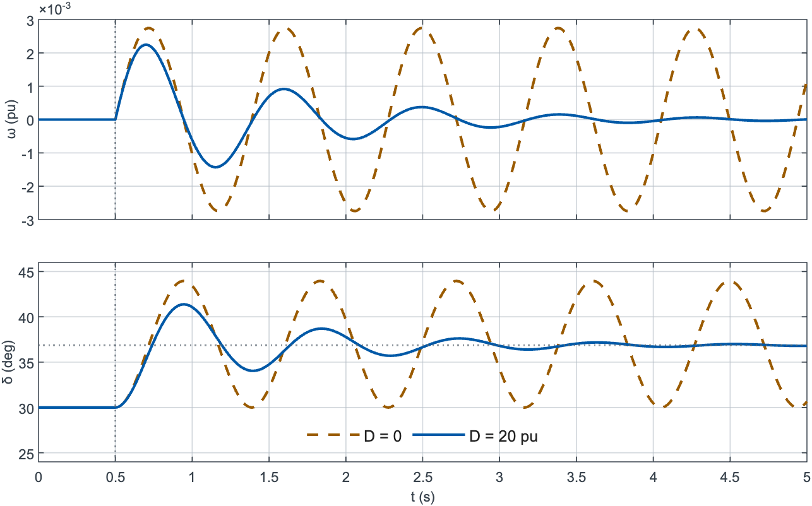
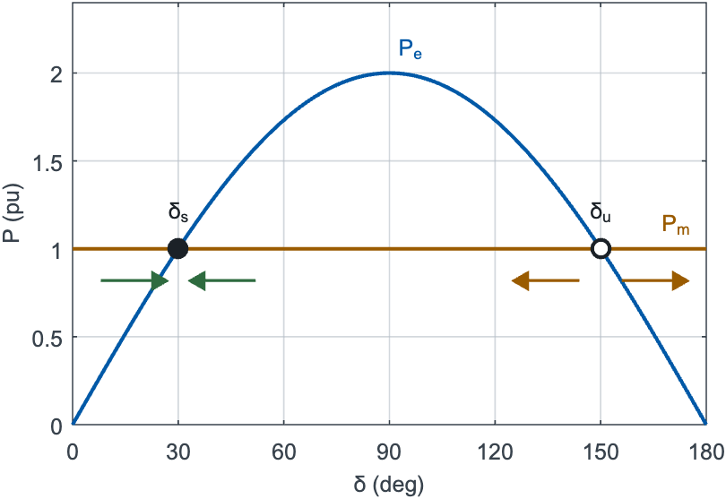
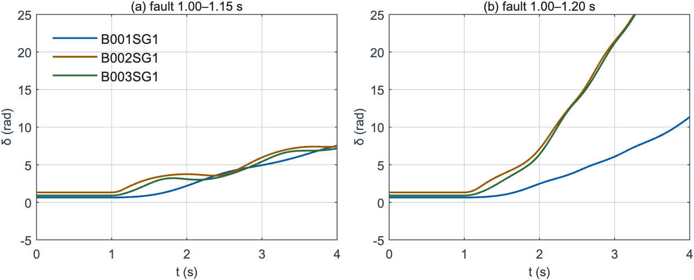
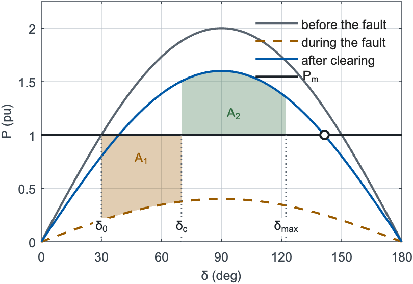
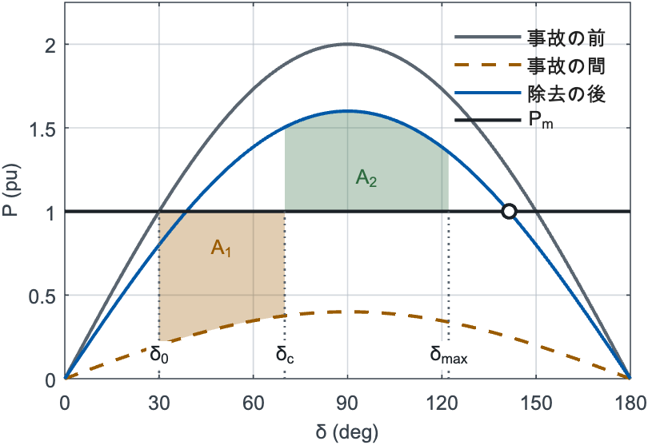
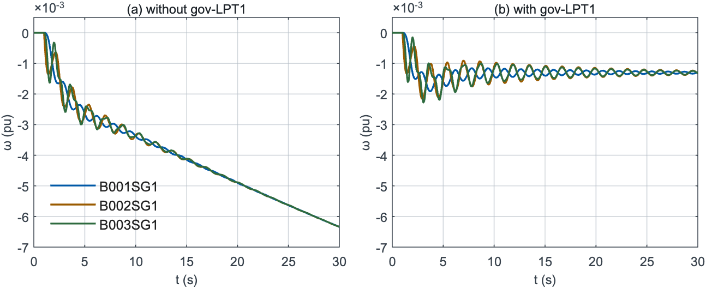

What this Part coversこの Part の内容
- What a time-domain simulation computes: how the system moves away from its equilibrium and whether it comes back.時間シミュレーションが何を計算するか。平衡点からずれた系統が、どう動き、戻ってくるかどうか。
- What the swing equation says about a generator, and the roles of the synchronizing power and damping.動揺方程式が発電機について何を表すか。同期化力と制動の役割。
- How a fault proceeds, why the clearing time decides stability, and how the equal-area criterion explains it.事故がどう進むか。除去までの時間が安定かどうかを決める理由と、それを説明する等面積法。
- How the frequency changes after a loss of generation, and what inertia and governors do.発電が失われた後に周波数がどう変わるか。慣性とガバナが果たす役割。
- Which disturbances GUILDA can apply in a simulation.GUILDA のシミュレーションで与えられる外乱の種類。
Equilibrium and deviation平衡点とずれ
A power flow gives a "photograph" of the operating state: the voltages and power flows when nothing is changing. In this state every generator turns at the same speed and its mechanical input equals its electrical output, so the state stays as it is. Such a state is called an equilibrium.
潮流計算は、何も変化していないときの運転状態、つまり電圧と電力の流れの「写真」を求めます。この状態では、すべての発電機が同じ速さで回り、機械から受け取る電力と電気として送り出す電力が等しいので、状態はそのまま変わりません。このような状態を平衡点といいます。
A real system is pushed away from its equilibrium all the time: loads change, lines are struck by lightning, generators trip. A time-domain simulation starts from the equilibrium, applies such a disturbance, and computes step by step how the state changes over time. The main question is whether the system settles again, and how far it swings on the way.
実際の系統は、平衡点から常に押し出されています。負荷が変わり、送電線に雷が落ち、発電機が止まります。時間シミュレーションは、平衡点から始めてこうした外乱を加え、状態が時間とともにどう変わるかを少しずつ計算します。知りたいことの中心は、系統が再び落ち着くかどうか、そしてその途中でどれだけ大きく揺れるかです。
For a generator, "going over the hill" means that it can no longer turn in step with the other generators. This is called loss of synchronism (out of step). Protection then disconnects it from the network. The rest of this page explains where this valley and hill come from.
発電機にとって「山を越える」とは、ほかの発電機と同じ速さで回り続けられなくなることです。これを脱調といい、保護装置がその発電機を系統から切り離します。以下では、この谷と山がどこから来るのかを説明します。
The swing equation動揺方程式
A synchronous generator has a heavy rotor driven by a turbine. The turbine pushes the rotor with the mechanical power , and the network pulls power out of it as the electrical power . If the two are equal the speed does not change. If more comes in than goes out, the surplus is stored as kinetic energy and the rotor speeds up; if less comes in, the rotor slows down.
同期発電機は、タービンで回される重い回転子を持っています。タービンは機械入力 で回転子を押し、系統は電気出力 として電力を取り出します。2 つが等しければ回転の速さは変わりません。入ってくる電力のほうが多ければ、余った分が運動エネルギーとして蓄えられて回転が速くなり、少なければ遅くなります。
The swing equation writes this down. The generator models of GUILDA (classical, one-axis, two-axis and Park) use exactly this form:
これを式にしたものが動揺方程式です。GUILDA の発電機のモデル（古典・1 軸・2 軸・Park）は、どれもこの形を使っています。
- This is the inertia of the rotor!これが回転子の慣性！
- Power in minus power out入る電力と出る電力の差
- Damping制動
- A faster rotor moves its angle ahead速さのずれが角度を進める
Here is the deviation of the rotor speed from the rated speed in per unit (0 at the rated speed), [rad] is the rotor angle measured against a frame that turns at the rated frequency [Hz], [s] is the inertia ( is the inertia constant), [pu] is the damping coefficient, and the powers are in per unit.
は回転の速さの定格からのずれ（単位法、定格の速さで 0）、 [rad] は定格の周波数 [Hz] で回る基準から測った回転子の角度、 [s] は慣性（ は慣性定数）、 [pu] は制動係数で、電力は単位法の値です。
- First line1 行目
- Inertia × acceleration = power in − power out − damping. A heavier rotor (larger M) changes its speed more slowly for the same imbalance.慣性 × 加速 ＝ 入る電力 − 出る電力 − 制動。回転子が重い（M が大きい）ほど、同じ差でも速さはゆっくり変わります。
- Second line2 行目
- While the rotor turns faster than the rated speed (ω > 0), its angle moves ahead; while slower, it falls behind.回転子が定格より速く回っている間（ω > 0）は角度が進み、遅い間は遅れていきます。
The figure solves this equation for one generator after a sudden increase of the mechanical power. The rotor speeds up first, the angle grows, and the angle then swings around its new equilibrium.
下の図は、機械入力を急に増やしたときの 1 台の発電機について、この式を解いたものです。まず回転子が加速して角度が増え、そのあと角度は新しい平衡点のまわりで揺れます。

Synchronizing power and damping同期化力と制動
The electrical output depends on the rotor angle. Model the generator as a constant internal voltage behind a reactance, and connect it through a lossless line to a network so large that its voltage and frequency do not change (an infinite bus). If is the total reactance between the two voltages and the angle of ahead of , the output is
電気出力は、回転子の角度によって変わります。発電機を、リアクタンスの奥にある一定の内部電圧 で表し、損失のない送電線で、電圧 と周波数が変わらないほど大きな系統（無限大母線）につなぎます。2 つの電圧の間のリアクタンスの合計を 、 から見た の進みの角度を とすると、電気出力は次の式になります。
- This is the most power the generator can send!これが送れる最大の電力！
- Changes with the rotor angle回転子の角度で変わる
Drawing this power–angle curve together with the mechanical power gives two crossings, and . At both, input equals output, but they behave differently.
この電力相差角曲線と機械入力を同じ図に描くと、 と の 2 か所で交わります。どちらも入力と出力が等しい点ですが、ふるまいは異なります。

At the left crossing, if the angle grows a little, the electrical output becomes larger than the mechanical input, so the rotor slows down and the angle returns. If the angle shrinks, the opposite happens. This restoring effect is the synchronizing power; it is what keeps the generators turning together, like a spring between them. Its strength is the slope of the curve, the synchronizing power coefficient
左の交点では、角度が少し増えると電気出力が機械入力より大きくなるので、回転子が減速して角度は戻ります。角度が減ると逆のことが起きます。この引き戻す働きが同期化力で、発電機どうしを、ばねのようにつないで同じ速さで回らせています。その強さは曲線の傾き、つまり次の同期化力係数です。
- This is the strength of the spring between generators!これが発電機どうしをつなぐばねの強さ！
- Negative beyond 90°90° を超えると負になる
It is positive below 90° and negative above. Around the right crossing the effect therefore has the wrong sign, which is the "hill top" of the valley picture.
これは 90° より小さい角度で正、大きい角度で負です。そのため右の交点のまわりでは、引き戻す働きの向きが逆になります。これが谷のたとえの「山の頂上」です。
A spring alone would make the angle oscillate forever, as the dashed curves of the previous figure do. What makes the swing die out is damping: the term and, in real machines, the damper windings and controllers such as the power system stabilizer (PSS). Synchronizing power decides whether the rotor is pulled back; damping decides how quickly the oscillation fades.
ばねだけなら、前の図の破線のように、角度はいつまでも振動し続けます。揺れを小さくしていくのが制動です。式の の項がそれにあたり、実際の発電機ではダンパ巻線や、系統安定化装置（PSS）などの制御器も制動を生みます。同期化力は引き戻されるかどうかを、制動は振動がどれだけ速く収まるかを決めます。
The course of a fault事故の流れ
The typical large disturbance is a short circuit (fault), for example a transmission line struck by lightning and grounded. A fault proceeds in a fixed order.
代表的な大きな外乱は、送電線に雷が落ちて地面とつながる地絡のような短絡事故です。事故は決まった順に進みます。
During the fault the voltage near the fault point drops sharply, so the generators can hardly send their electrical power out. The mechanical power from the turbines does not change that fast, so the rotors accelerate and their angles grow. Protection relays detect the fault and open the circuit breakers at both ends of the faulted line, which removes the fault. The network after clearing may be weaker than before, because one line is now out.
事故の間は、事故点の近くで電圧が大きく下がるため、発電機は電気出力をほとんど送り出せません。タービンからの機械入力はそれほど速く変わらないので、回転子は加速し、角度が増えていきます。保護リレーが事故を検出して、事故が起きた送電線の両端の遮断器を開くと、事故は除去されます。除去の後の系統は、送電線が 1 本減っているぶん、事故の前より弱くなっていることがあります。
Transient stability and the critical clearing time過渡安定度と臨界除去時間
Transient stability is the ability of the generators to stay in synchronism after a large disturbance such as a fault. The longer the fault lasts, the more the rotors accelerate. The longest fault duration for which the system still recovers is the critical clearing time (CCT). Protection must clear faults faster than this.
過渡安定度は、事故のような大きな外乱の後も、発電機が同期を保ち続けられるかどうかを表します。事故が長く続くほど、回転子はより加速します。系統が回復できる、最も長い事故の継続時間を臨界除去時間（CCT）といいます。保護装置は、これより短い時間で事故を除去しなければなりません。
The figure below is a GUILDA simulation of the bundled IEEE 9-bus system (three one-axis generators, each with an AVR and a PSS). Bus 7, next to generator 2, is grounded at 1 s, and the fault is removed after 0.15 s or 0.20 s. The lines show the rotor angles of the three generators.
下の図は、同梱の IEEE 9 母線系統（1 軸モデルの発電機 3 台。それぞれに AVR と PSS 付き）を GUILDA でシミュレーションした結果です。発電機 2 の近くの母線 7 を 1 秒で地絡させ、0.15 秒後または 0.20 秒後に除去しています。線は、3 台の発電機の回転子の角度です。

plot_trajectory, IEEE 9-bus system): the rotor angles δ of the three generators. (a) Fault cleared after 0.15 s: the angles swing and then move together. (b) Cleared after 0.20 s: generators 2 and 3 run away from generator 1, which is loss of synchronism.plot_trajectory、IEEE 9 母線系統）。3 台の発電機の回転子の角度 δ です。(a) 0.15 秒で除去すると、角度は揺れたあと、そろって動きます。(b) 0.20 秒で除去すると、発電機 2 と 3 が発電機 1 から離れていきます。これが脱調です。To run case (a) in GUILDA, load the system, make a scenario with the fault, simulate it and draw the rotor angles:
GUILDA で (a) を確かめるときは、系統を読み込み、地絡を入れたシナリオを作ってシミュレーションし、回転子の角度を図にします。
net = network.IEEE9bus(LocalController=true);
sc = net.add_scenario("fault", Time=[0, 4]);
sc.add_fault("B007", [1, 1.15]);
result = net.simulate("fault");
result.plot_trajectory(Quantity="delta");A difference of only 0.05 s separates the two results. Searching between them, the critical clearing time of this fault in this model is about 0.188 s. The value depends on the place of the fault, the operating state, and the models and controllers of the generators; finding it is a typical use of time-domain simulation.
2 つの結果の差は、わずか 0.05 秒です。この間を細かく調べると、このモデルでのこの事故の臨界除去時間は約 0.188 秒です。この値は、事故の場所、運転状態、発電機や制御器のモデルによって変わります。それを求めることは、時間シミュレーションの代表的な使い方です。
Loss of synchronism in a multi-machine system is judged from the differences between rotor angles, not from one angle alone, because all angles may drift together without any harm. GUILDA judges a simulation result in this way, comparing the angles with that of a reference generator (by default the one at the slack bus) or with the center of inertia:
多機系統の脱調は、1 台の角度ではなく、回転子の角度の差で判定します。すべての角度がそろって動くだけなら問題はないからです。GUILDA は、基準の発電機（既定は slack 母線の発電機）、または慣性中心からの角度の差で、シミュレーションの結果が脱調したかどうかを判定します。
result.judge_out_of_step()The equal-area criterion等面積法
For one generator connected to a large network, the critical clearing can be explained without solving the equations in time. Take the swing equation without damping (), multiply the first line by and integrate from the equilibrium , where :
大きな系統につながった 1 台の発電機なら、式を時間で解かなくても、臨界の除去を説明できます。制動のない（）動揺方程式の 1 行目に を掛け、 の平衡点 から積分すると、次の式になります。
The left side is the kinetic energy of the speed deviation (in the units of the swing equation); the right side is the area between the mechanical power and the output curve. Now draw three power–angle curves: before the fault, during the fault (much lower, because little power can be sent), and after clearing (lower than before if a line was removed).
左辺は回転の速さのずれによる運動エネルギー（動揺方程式の単位で表したもの）、右辺は機械入力と出力の曲線の間の面積です。ここで 3 つの電力相差角曲線を描きます。事故の前、事故の間（電力をほとんど送れないので、ずっと低い）、除去の後（送電線を 1 本外した場合は、事故の前より低い）の 3 つです。


During the fault (from to the clearing angle ) the input is larger than the output , and the rotor gains the energy of area . After clearing the output is larger, and the rotor loses energy as the angle grows. By the equation above, it stops () and turns back at the angle where the two areas are equal:
事故の間（ から除去の角度 まで）は入力が出力 より大きく、回転子は面積 のエネルギーを得ます。除去の後は出力 のほうが大きく、角度が増えるにつれてエネルギーを失います。上の式から、2 つの面積が等しくなる角度 で回転子は止まり（）、折り返します。
- Accelerating area: energy gained during the fault加速面積：事故の間に得るエネルギー
- Decelerating area: energy given back after clearing減速面積：除去の後に失うエネルギー
- Output during the fault: very small事故の間の出力（とても小さい）
The system is stable if an area as large as fits before the hill top of the post-fault curve, that is, if . A later clearing makes larger and leaves less room for . The clearing angle at which the two just fit is the critical clearing angle (73° for the curves of the figure), and the time to reach it is the critical clearing time.
除去の後の曲線の山の頂上 に届く前に、 と同じ大きさの をとれれば、つまり なら安定です。除去が遅れると が大きくなり、 をとれる余地が減ります。ちょうど等しくとれる除去の角度が臨界除去角（図の曲線では 73°）で、そこに達するまでの時間が臨界除去時間です。
The equal-area criterion is exact only for one generator against a large network without damping. For many generators with controllers, as in the 9-bus example above, the time-domain simulation is used instead; the picture of "energy gained during the fault, energy lost after it" still explains the results.
等面積法がそのまま成り立つのは、制動のない 1 台の発電機が大きな系統につながった場合だけです。前の節の 9 母線系統のように、制御器付きの発電機が何台もある場合は、時間シミュレーションを使います。それでも、「事故の間に得たエネルギーを、除去の後に失えるか」という見方で結果を理解できます。
Frequency after a disturbance: inertia and governors周波数の変化（慣性とガバナ）
Not every disturbance shakes the generators apart. When a generator trips or a large load is connected, all the rotors slow down together, because the missing power is drawn from their common kinetic energy. The frequency of the whole system falls. Treating the whole system as one generator (the swing equation with all inertias added up), a loss of generation gives
外乱がいつも発電機どうしを引き離すわけではありません。発電機が止まったり、大きな負荷がつながったりすると、足りない電力が全体の運動エネルギーから取り出されるので、すべての回転子がそろって遅くなります。系統全体の周波数が下がります。系統全体を 1 台の発電機とみなすと（すべての慣性を足し合わせた動揺方程式）、発電が だけ不足したとき、次の式になります。
- The inertia of the whole system系統全体の慣性
- Extra mechanical input from the governorsガバナが増やす機械入力
- The lost generation: the disturbance不足した発電（外乱）
- Loads that use less at a lower frequency周波数が下がると減る負荷の消費
Here is the total inertia, the increase of the mechanical power by the governors, and mainly the frequency dependence of the loads (their power falls a little with the frequency). The course of the frequency has three parts.
は全体の慣性、 はガバナによる機械入力の増加、 は主に負荷の周波数特性（周波数が下がると消費が少し減ること）です。周波数の経過は 3 つに分けられます。

plot_trajectory, IEEE 9-bus system, 60 Hz): at t = 1 s the mechanical power of generator 2 falls by 0.1 pu. (a) Without governors the frequency keeps falling; only the damping of the generators slows it. (b) With the governor model gov-LPT1 on each generator the fall stops within a few seconds, but a deviation remains.plot_trajectory、IEEE 9 母線系統、60 Hz）。t = 1 s に発電機 2 の機械入力が 0.1 pu 減ります。(a) ガバナがないと、周波数は下がり続けます。遅くするのは発電機の制動だけです。(b) 各発電機にガバナのモデル gov-LPT1 を付けると、数秒で低下が止まりますが、ずれは残ります。- Inertia (first seconds)慣性（最初の数秒）
- Right after the loss, the governors have not yet acted and , so only the stored kinetic energy covers the missing power. The initial rate of fall is : a system with more heavy rotors falls more slowly.不足が起きた直後は、ガバナはまだ働かず なので、蓄えられた運動エネルギーだけが足りない電力を補います。初めに周波数が下がる速さは です。重い回転子が多い系統ほど、ゆっくり下がります。
- Governors (seconds)ガバナ（数秒〜）
- The governor of each generator senses the speed drop and opens the steam or water valve, raising the mechanical power. This stops the fall. The lowest point reached on the way is called the frequency nadir.各発電機のガバナ（調速機）は回転の低下を感じとり、蒸気や水の弁を開いて機械入力を増やします。これで低下が止まります。途中で最も下がった点を周波数の最下点（ナディア）といいます。
- Remaining deviation残るずれ
- Governors increase their output in proportion to the frequency deviation, in steady state (droop control). Setting the derivative to zero gives the deviation that remains, . Bringing the frequency back to its rated value is the job of a slower control, the AGC (Part 8).ガバナは周波数のずれに比例して出力を増やします（垂下特性。定常状態で ）。上の式の微分を 0 とおくと、残るずれ が得られます。周波数を定格の値まで戻すのは、より遅い制御である AGC の役割です（Part 8）。
Without governors () the frequency falls until the loads consume less, to , much lower than with governors, as in (a) of the figure. In GUILDA, governor models can be attached to generators as local controllers, and the same kind of simulation shows these effects.
ガバナがなければ（）、負荷の消費が減るまで、 まで下がり続け、ガバナがある場合よりずっと低くなります。図の (a) がこれにあたります。GUILDA では、ガバナのモデルをローカル制御器として発電機に付けられ、同じ時間シミュレーションでこうした効果を確かめられます。
Disturbances that GUILDA can applyGUILDA で設定できるイベントの種類
In GUILDA a simulation run starts from the equilibrium found by the power flow and follows one scenario: a simulation time and a list of disturbances (events), each with the time at which it starts and ends. A scenario is made with net.add_scenario, and each kind of event is added by its own method.
GUILDA の時間シミュレーションは、潮流計算で求めた平衡点から始まり、1 つのシナリオに従って進みます。シナリオは、シミュレーションの時間と、外乱（イベント）の一覧（それぞれ始まりと終わりの時刻付き）の組です。シナリオは net.add_scenario で作り、イベントは種類ごとのメソッドで加えます。
- Bus fault母線の地絡 (
add_fault) - The voltage of a bus is held at 0 during the fault, as in the 9-bus example above.事故の間、母線の電圧を 0 にします。前の節の 9 母線系統の例がこれです。
- Branch faultブランチの地絡 (
add_fault) - A line is grounded at a point along its length, on one circuit or on all circuits.送電線の途中の点で地絡させます。1 回線だけ、またはすべての回線を選べます。
- Branch openingブランチの開放 (
add_open_branch) - One circuit or all circuits of a line are opened at a given time and stay open to the end of the run, for example to model the line removed by protection after a fault.送電線の 1 回線、またはすべての回線を、指定した時刻に開きます。実行の終わりまで開いたままです。事故の後に保護装置が送電線を外した状態を表すのに使います。
- Trip解列 (
add_trip) - A generator, load or other component, or a controller, is disconnected at a given time and stays disconnected to the end of the run.発電機や負荷などの機器、または制御器を、指定した時刻に切り離します。実行の終わりまで切り離したままです。
- Offset of a state状態のずれ (
add_offset) - A value is added to state variables at one moment, for example a small push to the rotor angle of a generator.ある時刻に状態変数へ値を加えます。たとえば、発電機の回転子の角度を少しずらします。
- Added input入力の追加 (
add_input) - A constant or a time series is added to an input of a component over a time span, for example a change in the mechanical power of a generator or in the impedance of a load.一定の値や時系列を、ある時間の間、機器の入力に加えます。たとえば、発電機の機械入力や、負荷のインピーダンスを変えます。
Events can be combined. For example, to clear the fault of the 9-bus example by opening the line between buses 5 and 7 (branch EL006) at 1.15 s and keeping it open, add the opening to the same scenario and run it again:
イベントは組み合わせられます。たとえば、9 母線系統の例の地絡を、1.15 秒に母線 5 と 7 の間の送電線（ブランチ EL006）を開いて除去し、そのまま開いておくときは、同じシナリオに開放を加えて、もう一度実行します。
sc.add_open_branch("EL006", 1.15);
result = net.simulate("fault");
result.judge_out_of_step()With one line less after clearing, the same 0.15 s fault now ends in loss of synchronism: the post-fault network is weaker, as in the equal-area picture. The result holds the time series of all states, voltages and currents, so the rotor angles, frequencies and voltages can be plotted after the run. How to write scenarios in detail is shown in the Live Script of this Part.
除去の後に送電線が 1 本少ないため、同じ 0.15 秒の地絡でも、こんどは脱調します。等面積法の図のように、除去の後の系統が弱くなるからです。結果には、すべての状態・電圧・電流の時系列が入っているので、実行の後に回転子の角度、周波数、電圧を図に描けます。シナリオの詳しい書き方は、この Part のライブスクリプトで扱います。
Summaryまとめ
- A time-domain simulation starts from the equilibrium, applies a disturbance and follows the state over time.時間シミュレーションは、平衡点から始めて外乱を加え、状態の変化を時間とともに追います。
- The swing equation says that the difference between mechanical input and electrical output accelerates or decelerates the rotor.動揺方程式は、機械入力と電気出力の差が回転子を加速・減速させることを表します。
- Synchronizing power pulls the rotor angle back like a spring; damping makes the swing die out.同期化力はばねのように回転子の角度を引き戻し、制動は揺れを収めます。
- The longer a fault lasts, the more the rotors accelerate. Beyond the critical clearing time the generators lose synchronism; the equal-area criterion explains this with energy.事故が長く続くほど回転子は加速し、臨界除去時間を超えると脱調します。等面積法は、これをエネルギーで説明します。
- After a loss of generation the frequency falls at a rate set by the inertia; governors stop the fall, and a deviation remains until AGC removes it.発電が不足すると、周波数は慣性で決まる速さで下がります。ガバナが低下を止め、残るずれは AGC が取り除きます。
- In GUILDA a scenario combines bus and branch faults, branch openings, trips, state offsets and added inputs.GUILDA のシナリオでは、母線とブランチの地絡、ブランチの開放、解列、状態のずれ、入力の追加を組み合わせられます。
References参考文献
- T. Ishizaki (ed.), T. Kawaguchi and K. Kawabe,石崎孝幸 編著、川口貴弘・河辺賢一 著、 電力系統のシステム制御工学 – システム数理と MATLAB シミュレーション –, Corona Publishing, 2022 (in Japanese).、コロナ社、2022 年（計測・制御セレクションシリーズ 4）。 The textbook GUILDA is based on; the generator models and the swing equation of this page follow its notation.GUILDA の基になった教科書です。このページの発電機のモデルと動揺方程式は、この本の書き方に合わせています。
- P. Kundur and O. P. Malik, Power System Stability and Control, 2nd ed., McGraw Hill, 2022. Transient stability, the equal-area criterion, and frequency control with governors and AGC.過渡安定度、等面積法、ガバナと AGC による周波数制御。
- J. Machowski, Z. Lubosny, J. W. Bialek and J. R. Bumby, Power System Dynamics: Stability and Control, 3rd ed., Wiley, 2020. The swing equation, the power–angle curve, fault clearing and the frequency response after a loss of generation.動揺方程式、電力相差角曲線、事故の除去、発電の脱落後の周波数の応答。